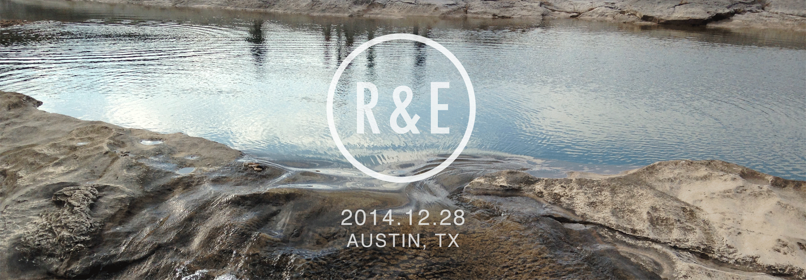
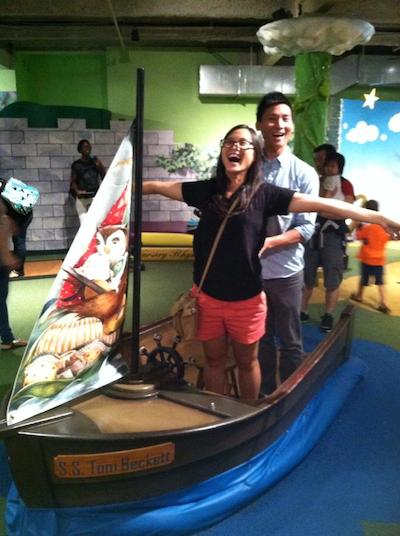

Hey there, thanks for visiting! Below, you will find all the information you need regarding our wedding. We can't wait to celebrate with all you all! #rosanfrey5ever
We would like to give a special shoutout to our parents for taking care of us from our teeny tiny human selves 23 years ago to where we are today. We love you mama, papa, mama, and baba!
- Rosanna Tse and Elfrey Shira
Our Story
- Rosanna is from Humble, TX near Houston. Elfrey is from Arlington, TX near Dallas.
- Rosanna and Elfrey met through Intramural Football their freshmen year. They were on the same team.
- One night, they dominated in Nertz as partners. Afterwards, Rosanna and Elfrey exchanged numbers.
- They became good friends throughout freshmen year and started to hang out often with other new college friends.
- During the Winter of their freshmen year, they started to video chat frequently.
- Rosanna and Elfrey shared many fun times together with close friends, like staying up til 5am watching Disney movies and playing games.
- By sophomore year, their friendship accelerated -- thanks to Matrices for sticking them in the same class.
- During Thanksgiving of sophomore year, Elfrey mentally surrendered to himself and admitted that he had feelings for Rosanna.
- Rosanna and some close friends visited Elfrey in NYC for the Winter of sophomore year and watched the ball drop at Time's Square to kick off the New Year. All Elfrey got was a hug.
- Elfrey told Rosanna about his feelings for her. She did not reciprocate, but they were willing to continue their friendship and see where it led.
- During the Spring Break of sophomore year, Rosanna told Elfrey that she was ready to date him.
- First Date: April 22, 2011
- They spent the first half of their first summer 7600 miles apart. Rosanna in East Asia and Elfrey in Houston.
- Throughout their junior year, they continued to grow in their relationship, living 7 seconds apart from each other.
- They learned how to: be photoshoot models, captain Intramural Football, eat good food together, bike through Austin, and be a couple.
- During the summer of 2012, they were 200 miles apart. Rosanna in Dallas, Elfrey in Austin. They got used to driving up and down I-35.
- As senior year came around, they learned how to: be better photoshoot models, captain Intramural Football with a winning record, eat better food, be involved with God's heart for the nations, go on rocky adventures, hug windmills, and be a better couple.
- After graduating from the Cockrell School of Engineering at UT, Rosanna and Elfrey waved goodbye to their friends and family in Texas and left for the East Coast. Rosanna in Philadelphia, Elfrey in DC.
- 130 miles apart, they learned how to: drive confusing East Coast roads, make new friends, enjoy beautiful Fall weather, drive in the snow, cook ramen burgers, stare at national monuments, snowboard (barely), ski (relearned), describe Chicago architecture, eat delicious Boston seafood, say words like "Schuylkill", bike across state lines, maneuver around NYC/Philly Chinatown, and cherish old friends.
- Oh also, Elfrey proposed to Rosanna on December 30, 2013. She said yes.
- In the Summer of 2014, they decided to move back to Austin together to become husband and wife, among other things.
- By December 28, 2014, Rosanna Tse will become Mrs. Shira, and Elfrey Shira will be... off the market.
Ceremony & Reception
Date:
Sunday, December 28, 2014
Time:
Ceremony: 4:00 PM
Reception to follow
Location:
Texas Old Town - Sage Hall
1205 Roland Lane
Kyle, TX 78640
The ceremony may be held outdoors; dress accordingly. There will be hors d'oeuvres and a Chinese tea ceremony following the wedding ceremony. Dinner and reception will be held afterwards. Feel free to leave as you please.
We will have a strict policy of NO ELECTRONICS out during the ceremony. Please save your instagramming and #hashtags for after.
Directions from Google
View Larger Map
Registry
We have a limited registry at Amazon.com. We already have many items for our home, so we do not need anything that is not on the registry. Cash gifts (no gift cards please) are welcome.
Guest Information
We have blocked out rooms for our guests at La Quinta Inn and Suites Kyle, a 10 minute drive to the wedding venue.
La Quinta Inn and Suites Kyle
18869 IH-35 North
Kyle, TX 78640
512-295-5599
To make reservations, call 1-866-527-1498.
Reservation Block #6164768, under "Shira Wedding"
Please reserve your rooms by November 28
If you will be in town more than one night, we recommend staying closer to Austin on the other nights to better experience the city. We have created a guide (printable) to help you explore some of our favorite parts of Austin:
RSVP
Fill out the form below or go here.
See you soon!
